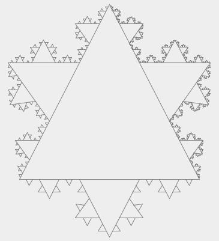

Геометрические фракталы
Именно с них и начиналась история фракталов. Этот тип фракталов получается путем простых геометрических построений. Обычно при построении этих фракталов поступают так: берется "затравка" - аксиома - набор отрезков, на основании которых будет строиться фрактал. Далее к этой "затравке" применяют набор правил, который преобразует ее в какую-либо геометрическую фигуру. Далее к каждой части этой фигуры применяют опять тот же набор правил. С каждым шагом фигура будет становиться все сложнее и сложнее, и если мы проведем (по крайней мере, в уме) бесконечное количество преобразований - получим геометрический фрактал.В машинной графике использование геометрических фракталов необходимо при получении изображений деревьев, кустов, береговой линии. Двухмерные геометрические фракталы используются для создания объемных текстур (рисунка на поверхности обьекта)
Примеры геометрических фракталов:
Снежинка Коха
 Изобретена в 1904 году немецким математиком Хельге фон Кохом.Для её построения берется единичный отрезок, делится на три равные части и среднее звено заменяется равносторонним треугольником без этого звена. На следующем шаге повторяем операцию для каждого из четырёх получившихся отрезков. В результате бесконечного повторения данной процедуры получается фрактальная кривая.